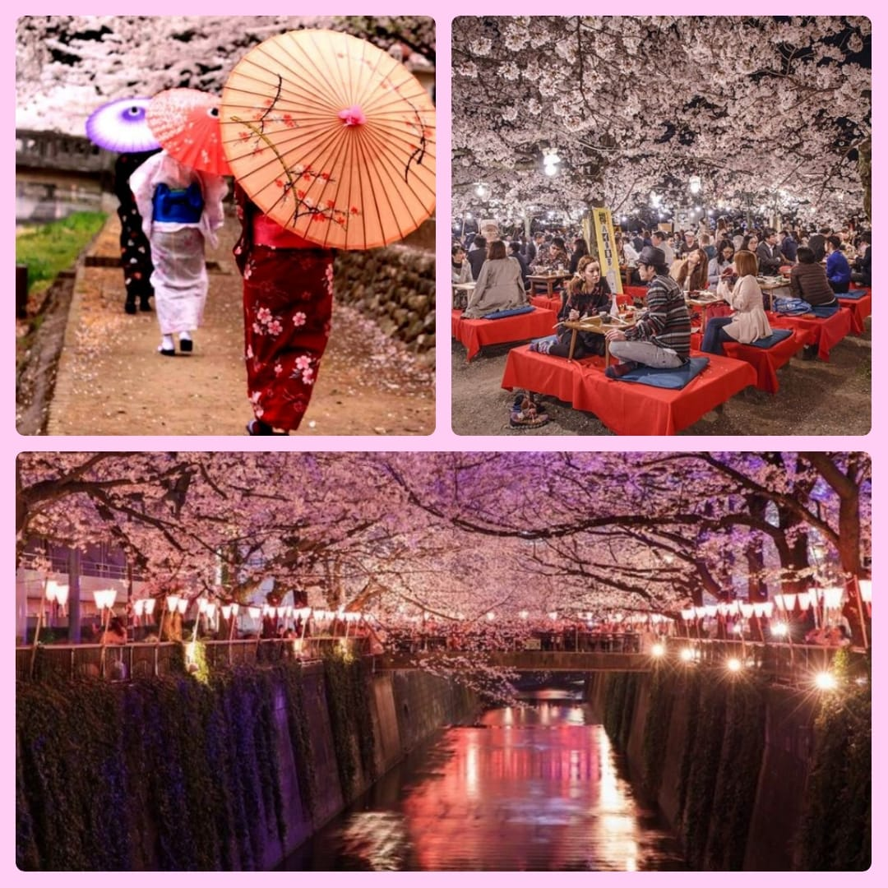

Japonia este țara cu unele dintre cele mai frumoase tradiții și obiceiuri, datorită în primul rând culturii unice moștenite din perioada antică, dar și a modului în care acestea au fost păstrate și menținute de-a lungul timpului. Ceea ce face ca Japonia să fie o țară deosebită nu se măsoară în spațiu fizic, ci în grade de nuanțe și multă sensibilitate. Respectul pe care japonezii îl atribuie istoriei și implicit tradițiilor este demn de urmat și fascinant de urmărit. Un prim exemplu îl reprezintă salutul care constă în înclinarea cu respect a capului și denotă considerația arătată persoanei din fața sa.
Din punct de vedere religios Japonia se remarcă prin coexistenţa a două religii, budismul care pătrunde în secolul al VI lea d.Hr. și shintoismul ( propria religie ). . Totuși, majoritatea japonezilor nu sunt adepții unei singure religii, ci încorporează în viața lor de zi cu zi caracteristici din ambele religii, într-un proces numit sincretism. Învățăturile budiste și șintoiste sunt adânc încorporate în viața zilnică din Japonia, deși japonezii pot să nu își dea seama de acest lucru.[judecată de valoare] În general, este dificil pentru cei necunoscători să separe religia „adevărată” japoneză de superstițiile și ritualurile de zi cu zi, iar majoritatea japonezilor nu își pun problema să le separe.

In Japonia, ceaiul este mult mai mult decat o bautura fierbinte si aromata. Este un adevarat ritual cu multe semnificatii profunde, cu radacini adanci in cultura japoneza. Ceremonia japoneza a ceaiului reprezinta puritate, liniste, respect si armonie, prin urmare sunt necesare o multime de pregatiri inaintea acestui eveniment important. Ceaiul care este specific acestei ceremonii este ceaiul verde Matcha, sub forma de pudra.
Arta ceaiului Matcha – ceremonia japoneza a ceaiului
In Japonia, ceaiul este mult mai mult decat o bautura fierbinte si aromata. Este un adevarat ritual cu multe semnificatii profunde, cu radacini adanci in cultura japoneza. Ceremonia japoneza a ceaiului reprezinta puritate, liniste, respect si armonie, prin urmare sunt necesare o multime de pregatiri inaintea acestui eveniment important. Ceaiul care este specific acestei ceremonii este ceaiul verde Matcha, sub forma de pudra.Istoria ceremoniei japoneze a ceaiului
Traditia acestei ceremonii a ceaiului este strans legata de budism si dateaza din secolul al IX-lea, cand a fost adusa din China de catre un calugar budist la intoarcerea sa in Japonia. Mentiunea din Nihon Koki precizeaza ca un calugar budist pe nume Eichu a pregatit personal si a servit sencha imparatului Saga, care se afla intr-o excursie in Karasaki in anul 815. Procedurile, sau, mai bine zis, pregatirile pentru ceremonia ceaului variaza in funtie de locul de desfasurare si de perioada anului.

Japonia are un număr impresionant de tradiții, un număr impresionant de festivaluri care vorbesc despre acestea și le sărbătoresc într-un mod unic în lume, dintre acestea voi aminti doar câteva și anume:
Măștile demonice fac parte din festivalul de aruncare a fasolei Setsubun din Japonia. Gyro / amanaimagesRF / Getty Images Distracție și bizar, Setsubun pornește de pe Haru Matsuri (Festivalul de primăvară) din Japonia. Setsubun este o veche tradiție care a evoluat într-un eveniment televizat cu celebrități naționale. Împreună cu producțiile mari, sunt înființate mici etape în întreaga țară. Bomboanele și banii sunt aruncați în mulțimea care apoi se grăbește să colecteze darurile mici. Oamenii aruncă fasole în ceremonii de mamă maki pentru a alunga spiritele rele care ar putea face lucrurile mai târziu. Un membru al familiei dă o mască de demon și joacă "tipul rău", așa cum toți ceilalți strigă și aruncă fasole până când pleacă.

O tradiție antică, cuvântul hanami înseamnă de fapt "vizionarea de flori" și exact asta fac oamenii de către mii de oameni în timpul Festivalului de primăvară Cherry Blossom. Ce ar putea fi mai mult Zen? Familiile și prietenii concurează pentru locuri liniștite în parcurile aglomerate pentru a petrece picnicuri și petreceri, atât în timpul zilei, cât și în timpul nopții. O mică bucurie are loc sub florile care sunt sărbătorite pentru natura lor trecătoare și impermanentă. Unii participanți la festival pot aprecia mai mult decât florile în sine, dar toți se bucură de timpul liber în aer proaspăt ! Ceaiurile sunt ținute sub copaci; cântece populare, dansuri tradiționale, concursuri de frumusețe și chiar parade adună atmosfera festivă. Când: Datele variază între martie și mai, în funcție de cât de departe este nordul sau sudul Japoniei. Evident, florile încep să apară mai întâi în sud, pe măsură ce iarna renunță. Previziunile oficiale pentru momentul în care sunt vizitate florile sunt prognozate oficial și afișate pe site-urile guvernului în fiecare an. Unde: Nationwide.
Deși tehnic nu este o sărbătoare națională oficială, Obon este cel mai cunoscut dintre festivalurile japoneze din vară. Obon este o sărbătoare a spiritelor strămoșilor care vin acasă să se odihnească. Oamenii vizitează altare, temple și morminte familiale în timpul lui Obon. Focurile sunt aprinse în fața casei, iar felinarele ajută spiritele. Obon este un moment important pentru familii; mulți se întorc în casele lor strămoșești, provocând întârzieri lungi în transporturi și unele închideri. Când: Obon se bazează pe calendarul lunar. Datele variază de la o regiune la alta, dar festivalul este întotdeauna în vară. Unele regiuni sărbătoresc în 15 iulie, altele pe 15 august sau 15 în a șaptea lună. Verificați când Obon va fi observat la fiecare destinație din Japonia. Unde: În toată Japonia.

Sporturi Nationale
Să începem cu ceea ce mulţi consideră a fi sportul naţional în Japonia. Este vorba despre sumo, o disciplină cu o vechime de peste 2.000 de ani, care la început nu era decât un simplu ritual dedicat zeilor. De altfel, una dintre cele mai cunoscute legende privind apariţia sumo-ului se referă la o confruntare între două zeităţi în urma căreia învingătorul urma să deţină controlul asupra insulelor care formează statul japonez. Aşadar, dacă vorbim despre sporturi populare la japonezi, sumo este cu siguranţă unul dintre acestea. La sumo, un sport de contact unic, luptătorii se numesc rikishi şi nu există categorii de greutate, astfel că mulţi dintre cei care practică această disciplină sportivă au greutăţi care pot depăşi chiar şi 200 de kilograme. Bineînţeles, fiind practicat îndeosebi în Japnia, sumo-ul n-a devenit sport olimpic.

În schimb, la Olimpiade se dau lupte grele la judo, disciplină care face şi ea parte din lista cu sporturi populare la japonezi. De asemenea, din aceeaşi categorie nu puteau lipsi artele marţiale, în speţă karate, Japonia fiind recunoscută ca ţară a samurailor.Revenind la tradițiile marțiale care au supraviețuit și astăzi deși casta samurailor a dispărut odată cu abdicarea ultimului Shogun al familiei Tokugawa, constatăm că și astăzi există un interes major în Japonia cu privire la aceste tradiții. Mulți maeștrii ce conduc astăzi astfel de școli vechi de arte marțiale au primit înalte distincții de stat fiind considerați adevărate comori pentru cultura și tradiția niponă. Există organisme și clădiri dedicate pentru studiul acestor tradiții militare. Fiecare oraș având o sală unde periodic se țin demonstrații de arte marțiale tradiționale. Stiluri de arte martiale:

Jiujitsu este o artă marţială tradiţională japoneză practicată din perioada feudală. Principalul scop al disciplinei este ca o persoană neînarmată sau înarmată cu o armă scurtă să poată învinge un samurai cu armură înarmat cu o sabie. Pentru că lovirea unui astfel de adversar este ineficientă, practicanţii acestei discipline au ales să se folosească de imobilizări şi aruncări pentru a îl neutraliza. Numele se traduce prin „arta supleţii”,
Aikido este o artă marţială care se bazează pe folosirea forţei adversarului, eschive şi pivotări în arc de cerc. Numele său se traduce prin „calea armonizării energiei” şi disciplina foloseşte loviturile doar în mică măsură, fiind preferate eschivele şi pivotările în arc de cerc. Fiind un stil de luptă pur defensiv, nu există competiţii de Aikido.
Onoare: primul cuvânt care ne vine în minte când ne gândim la samuraii japonezi. Asta pentru că războinicii legendari ai Japoniei sunt cunoscuți mai puțin pentru performanțele lor militare, cât pentru întreaga filosofie de viață care le dicta acțiunile în luptă și în viața cotidiană, când conduceau țara: căci, să reținem, samuraii nu au fost numai războnici de elită, ci și conducătorii de facto ai Japoniei timp de secole.

Istoria i-a consemnat pentru prima dată pe samurai în secolul al X-lea, ca gărzi la curtea imperială din Kyoto şi membri ai miliţiilor private angajaţi de seniorii locali. Eforturile curţii de a crea o armată de mici proprietari de pămînt şi ţărani au eşuat. În replică, aristocraţii din capitală şi bogaţii proprietari de pămînturi din provinciile îndepărtate şi-au creat propriile forţe de securitate, care includeau tineri nobili ambiţioşi, antrenaţi în tehnici de luptă. „În esenţă – spune istoricul Karl Friday, un expert în samurai de la University of Georgia – primii samurai erau mercenari, antrenaţi şi echipaţi prin mijloace private.” n viaţa reală, imaginea războinicului de onoare n-a supravieţuit probabil mult după războaiele mongole, care au fost pentru samurai un semnal de alarmă brutal despre realitatea războiului. De două ori la sfîrşitul secolului al XIII-lea, mari armate mongole, sub comanda lui Kubilai-han, nepotul cuceritorului Gingis-han, au atacat Japonia de pe mare.

În zilele noastre, spiritul samuraiului încă mai face şarje impetuoase prin psihicul japonezilor. Vitejia legendară a războinicilor medievali susţine persoanele publice care tînjesc după o Japonie puternică din punct de vedere militar. Recent, un general şi-a prefaţat remarcile despre cum să se răspundă unei ameninţări a Coreei de Nord spunînd: „Sîntem urmaşii samurailor.” Şi deşi constituţia japoneză interzice folosirea forţei militare în disputele internaţionale, iar opinia publică susţine puternic o politică externă pacifistă, politicienii conservatori fac tot mai mult apel la spiritul samuraiului în timp ce se ceartă pentru amendamente care ar permite Japoniei să se implice în războaie străine. Nostalgia faţă de samuraii idealizaţi e nemuritoare, înflorind în locuri ca Templul Sengakuji, din Tokio. Turiştii vin zilnic să aprindă tămîie la mormintele celor 47 de ronini faimoşi – care în 1703 au nesocotit puterea shogunului, decapitîndu-l pe responsabilul oficial vinovat de moartea stăpînului lor. Apoi roninii şi-au făcut seppuku, devenind cei mai iubiţi rebeli ai Japoniei.

Vremea samuraiului a venit şi a trecut, ca vremea unei flori de cireş. Şi nu există un epitaf mai bun ca primele rînduri din Heike monogatari, o poveste de război din secolul al XIII-lea: „Cei mîndri nu dăinuie veşnic, dar sînt ca visul unei nopţi de primăvară. Chiar şi cei mai puternici vor pieri, ca praful în vînt.”